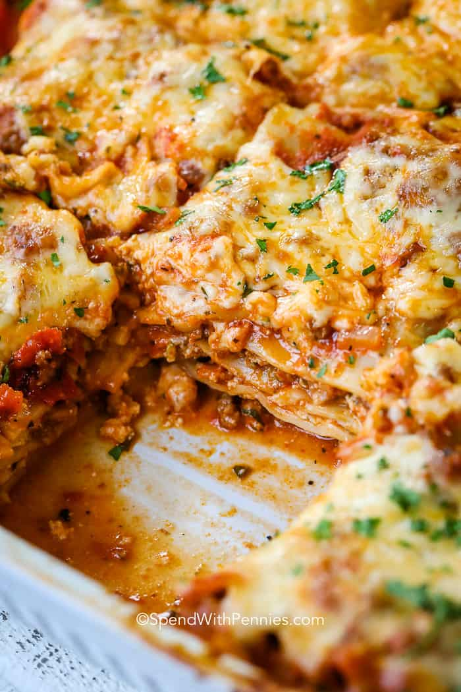

Simple Lasagna For Anyone!

Description
- Simple Lasagna that is freezer friendly!
- Serves 12
- 20 minutes to prepare
- 45 minutes to cook
- total time 1:05
Ingredients:
- 9 Lasagna noodles
- 1 tablespoon olive oil
- 1 pound ground beef
- 1 onion
- Sald and pepper to taste
- 1 (28-ounce) can crushed tomatoes
- tablespoon Italian Seeasoning
- 1 (15-ounce) package whole milk ricotta
- 3 1/2 cups shredded mozzerella, divided
- 1 large egg, beaten
- 1/4 cup freshly grated Parmesan
- 2 tablespoons chopped fresh parsley leaves (optional)
Directions:
- Preheat oven to 350 degrees F. Lightly oil a 9×13 baking dish or coat with nonstick spray.
- In a large pot of boiling salted water, cook lasagna noodles according to package instructions.
- Heat olive oil in a large skillet over medium high heat. Add ground beef and onion and cook until
beef has browned, about 3-5 minutes, making sure to crumble the beef as it cooks; season with salt
and pepper, to taste. Drain excess fat. Stir in tomatoes and Italian seasoning until well combined.
- In a medium bowl, combine ricotta, 1/2 cup mozzarella and egg; set aside.
- Spread 1 cup tomato mixture onto the bottom of a 9×13 baking dish; top with 3 lasagna noodles, 1/2
of the ricotta cheese mixture and 1 cup mozzarella cheese. Repeat with a second layer. Top with
remaining noodles, tomato mixture, 1 cup mozzarella cheese and Parmesan.
- Place into oven and bake for 35-45 minutes, or until bubbling. Then broil
for 2-3 minutes, or until top is browned in spots.
- Let cool 15 minutes. Serve, garnished with parsley, if desired.